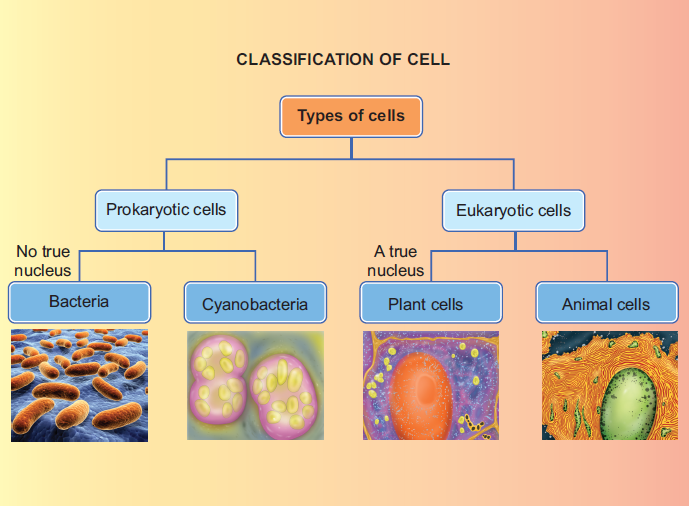
An explanation of the above flow chart begins
Types of Cell
There are two types of cells
1. Prokaryotic cells
2. Eukaryotic cells
The Prokaryotic cells does not have true nucleus
Examples of Prokaryotic cells
Bacteria and Cyanobacteria
Eukaryotic cell has a true nucleus
Examples of plant cell and animal cell
An explanation of the above flow chart ended here.
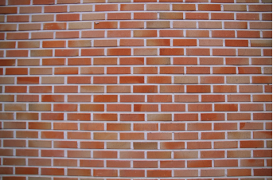
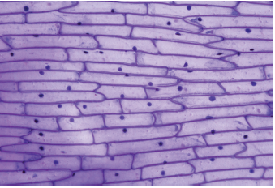
Observe the two pictures given above. Do you observe any similarity between them?
Close your eyes and imagine a brick wall. What is the basic building block of the wall? A single brick, of course.
Like a brick wall, your body is composed of basic building blocks, and are named as “Cells”.
The cell is the basic structural and functional unit of every living organism.
The cell is self - sufficient to carry out all the fundamental and essential functions of an organism.
All living things are made of one or more cells. There are variety of cell types however, they all have some common characteristic features.
More to Know
Can you see a cell with your naked eye? Cells are very minute and said to be microscopic and cannot be seen with our naked eyes.
They can be observed only through a specialized scientific instrument called “microscope”.
Now a days an electron microscope is used to magnify and observe the cells.
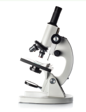
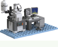
The Englishman Robert Hooke was a scientist, mathematician, and inventor. He improved microscope which was used in those days, and built a compound microscope. He placed water-lens beside the microscope to focus the light from an oil-lamp on specimens to illuminate them brightly. So that he was able to see the minute parts of the objects clearly.
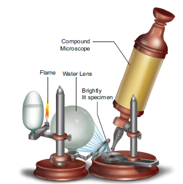
One day Hooke made thin sections of the cork and observed them through his microscope. He observed many small identical chambers which were hexagonal in shape. He was surprised.
After that he observed many objects like Butterfly's wings, Bee’s compound eyes etc.,
Based on this observation, Hooke published a book named Micrographia in the year 1665, where he first used the term Cell. He described the structure of tissue using the term cell.
In Latin the word 'cellua' means a small chamber.
The branch of science that deals with the study of cells is called ‘Cell Biology’.
A typical cell consists of three major parts:
1. An outer cell membrane.
2. A liquid cytoplasm.
3. A nucleus.
Analogous to the body's internal organ, like eyes, heart, lungs, etc., organelles are specialized structures and perform valuable functions necessary for normal cellular operation. Many distinct structures called Organelles lie within the cell.
The size of cells may vary from a micrometer (a million of a meter) to a few centimeters. Most cells are microscopic and cannot be seen with the naked eye. They can be observed only through the Microscope.
Smallest size of the cell is present in Bacteria. The size of the bacterial cell ranges from 0.01 micrometer to 0.5 micro meter.
Activity 1
Aim: To observe the structure of a single cell (Hen’s egg).
Materials Needed: A Hen’s egg and a plate.
Method: Crack the shell and break open the egg in a plate.
Observation: The egg has a yellow part and a transparent part surrounding it. The white transparent part (albumin) is jelly-like and represents the cell’s cytoplasm, while the yellow part (yolk) is thicker and represents the cell’s nucleus. On the internal side of the shell can be seen a thin membranelike structure, which represents the cell membrane.
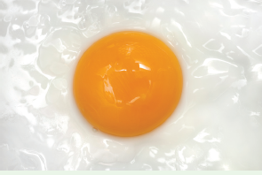
On the other hand, the largest cell is the egg of an ostrich with 170-millimeter width. We can see this with the naked eye.
In Human body the nerve cells are believed to be the longest cells.
Cell size has no relation to the size of an organism. It is not necessary that the cells of, say an Elephant be much larger than those of a Mouse.
Cells are of different shapes. For example, some shapes are given in the below pictures.
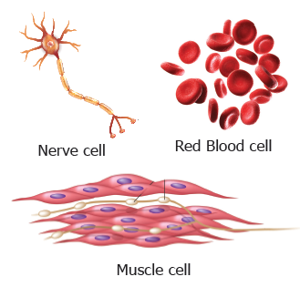
The number of cells present in different organisms may vary. Organisms may be either unicellular (single cell) or multicellular. Organisms such as Bacteria, Amoeba, Chlamydomonas, and Yeast are unicellular.
On the other hand, organisms such as Spirogyra, Mango, and Human beings are multicellular. (that is) made up of a few hundreds to millions of cells.
Approximate number of cells in the Human body is 3.7 Multiply 1013 or 37,000,000,000,000.
Ranges of cell size
(From small to Large)
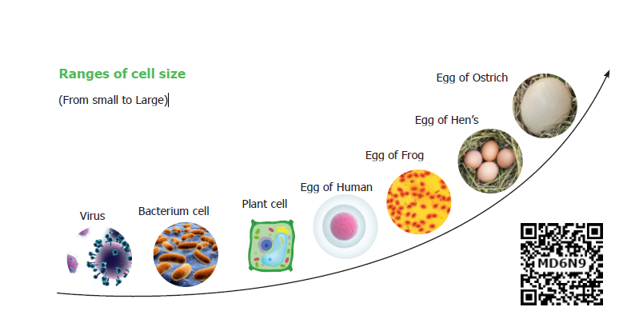
Generally, cells are classified into two types. First one is Prokaryotic cell. It has no true nucleus and no nuclear membrane. Another one is Eukaryotic cell. It has true nucleus consisting of nuclear membrane.
The unicellular organisms like Bacteria has Prokaryotic cells. It has no true nucleus.
This type of nucleus is called as nucleoid. No nuclear membrane is around this nucleoid. These cells were the first form of life on Earth. It is ranging from 0.003 to 2.0 micro meter in diameter.
Example. Escherichia coli bacteria.
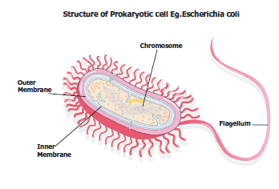
Cell which has true nucleus is called as eukaryotic cell. It is bigger than prokaryotic cell. Its organelles are bounded by membrane.
Example. Plants, animals, most of the fungi and algae.
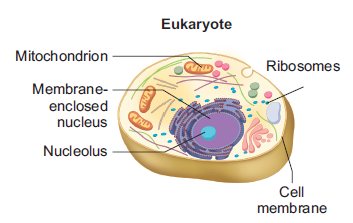
Activity 2
Aim: To observe onion peel cells under a microscope
Materials Required: Glass slide, cover slip, onion, iodine solution, knife
and microscope.
Procedure: Take an onion and cut it into two halves along its length. Take out one of its fleshy leaves. With the help of a pair of forceps, remove a transparent, thin peel from the inner surface of the leaf. Take a glass slide and put a drop of water at the centre. Place the peel on the drop of water. Pour a drop of iodine solution on the peel. Now place a cover slip over the material. Observe under the microscope.
Observation: You will be able to see rectangular cells of the onion peel, with a nucleus in each of them.
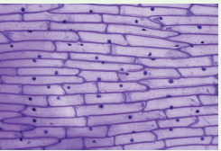
Differences between Prokaryotic cell and Eukaryotic cell
Prokaryotic cell It’s diameter ranges from 1 to 2 micron |
Eukaryotic cell It’s diameter ranges from 10 t0 100 micron |
Prokaryotic cell Absence of membrane bound organelles |
Eukaryotic cell Presence of membrane bound organelles |
Prokaryotic cell Nucleus is not surrounded by nuclear membrane |
Eukaryotic cell True nucleus is surrounded by nuclear membrane |
Prokaryotic cell Absence of nucleoli |
Eukaryotic cell Presence of nucleoli |
Both plant and animals are made up of cells. Both cells are eukaryotic in nature, having a well-defined membrane – bound nucleus.
Plant cell
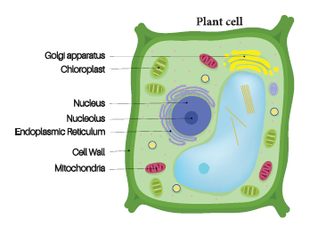
Animal cell
cell.
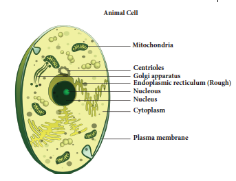
3 Dimension - cell structure
1. How does a cell look like?
2. What is its shape and size?
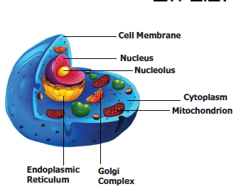
We can see the three sides of the cell structure. You can also view the size, shape and location on the organelles of the cell.
3-D view is appealing because it is more like reality. In 3-D, view we can see the entire view of the cell. It exposes the accurate size and shape and shows the correct location of the cell organelles.
Activity 3
Aim
To rectify the variation between 2-D shape and 3-D shape.
Materials required
Polythene bag, water, marble ball (golli gundu)
Procedure
Take a polythene bag with water. Put a marble ball into the polythene bag. Then draw a picture in your note book about this task.
If you draw a picture in round shape. It will be called 2-Dimensional picture. If you draw a picture in spherical shape it is called 3-Dimensional.
Result
Now you can realize your misconception. So, the animal cells are spherical in shape and structure, not in a round shape.
Serial number 1 |
Cell Components Cell wall |
Main Functions
|
Special Name Supporter and protector |
Serial number 2 |
Cell Components Cell membrane |
Main Functions
|
Special Name Gate of the cell
|
Serial number 3 |
Cell Components Cytoplasm |
Main Functions A watery, gel-like material in which cell parts move |
Special Name Area of movement |
Serial number 4 |
Cell Components Mitochondria |
Main Functions Produce and supply most of the energy for the cell |
Special Name Power house of the cell |
Serial number 5 |
Cell Components Chloroplasts |
Main Functions
|
Special Name Food producers for the cell (Plant cell) |
Serial number 6 |
Cell Components Vacuoles |
Main Functions Store food, water, and chemicals |
Special Name Storage tanks |
Serial number 7 |
Cell Components Nucleus |
Main Functions
|
Special Name Control centre |
Serial number 8 |
Cell Components Nucleus membrane |
Main Functions Surrounds and protects the nucleus control the movement of materials in and out of the nucleus |
Special Name Gate of the nucleus |